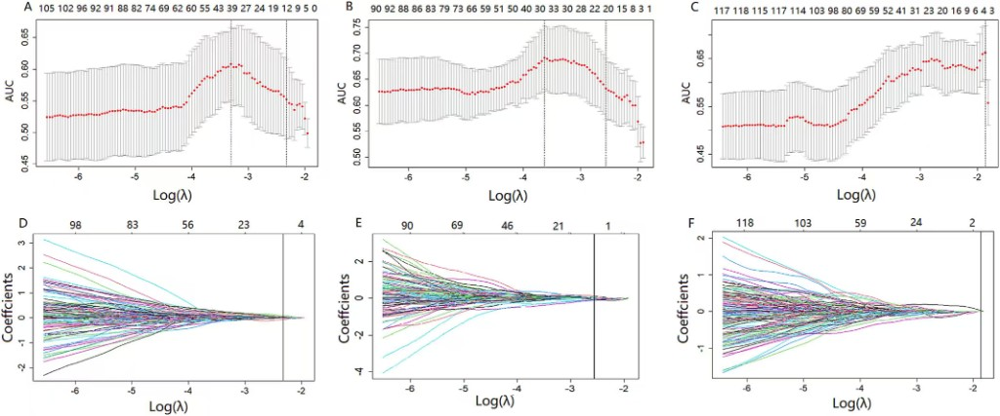
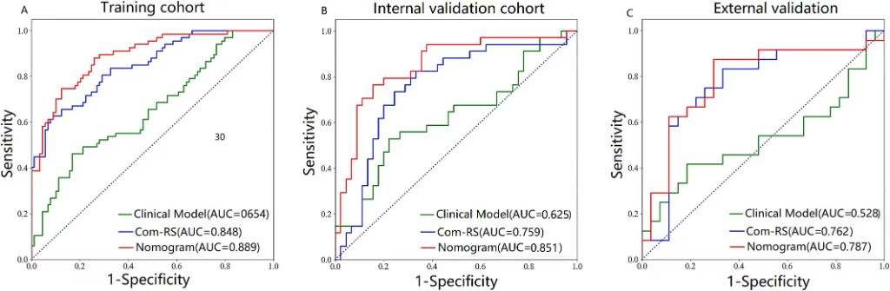
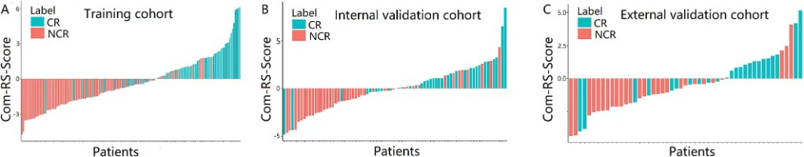
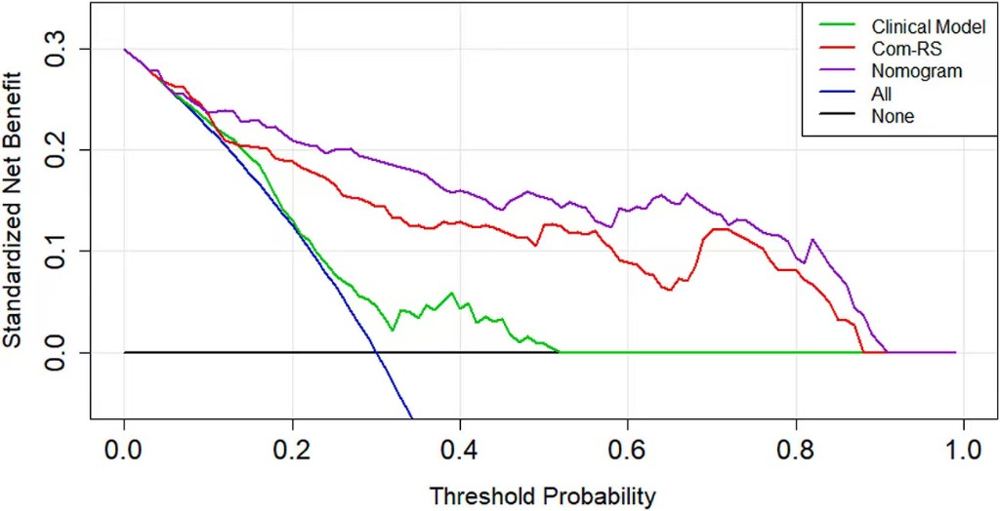
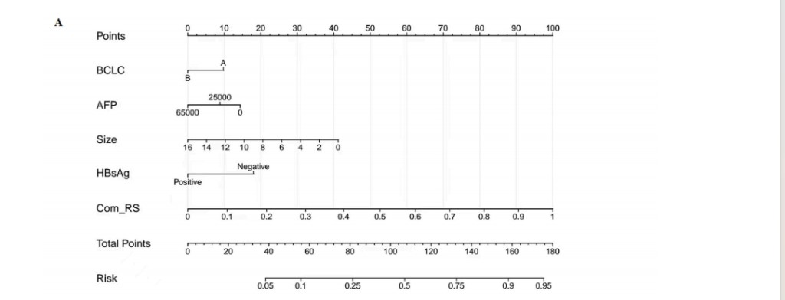

徐兆阳
组长主要方向：医学人工智能、医学影像分析、医学科研创新
- 发表 SCI 英文论文 2 篇，其中 Magnetic Resonance Imaging 论文为第一作者。
- 参与/申请发明专利 3 项，具备科研写作、专利申报与项目协作能力。
- 获全国级二等奖、省级一等奖等多项竞赛荣誉，具备较强竞赛实践能力。
肝癌介入治疗智能评估平台
计算机设计大赛参赛项目
肝癌介入治疗智能评估平台
医工交叉创新，推动肝癌精准诊疗
11个组学特征+4项指标
0.892
最高AUC
结合多参数MRI影像特征与临床指标，实现高精度疗效预测
MRI影像组学+人工智能
融合医学影像学与计算机科学，创新肝癌临床诊疗手段
术前无创评估疗效
为医生提供术前预测工具,助力个体化治疗方案制定
从算法设计、验证路径到临床落地，构建可解释、可复核、可部署的预测体系
Innovation 01
不仅关注肿瘤核心，还纳入瘤周微环境纹理信息，补足传统单区域建模盲区。
Innovation 02
把 BCLC、AFP、肿瘤大小、HBsAg 与 Com-RS 联合建模，增强个体化预测能力。
Innovation 03
LASSO 从高维特征中筛选关键变量，结合 Nomogram 输出透明推理路径，降低“黑箱感”。
Innovation 04
训练集、内部验证集、外部验证集逐层评估，兼顾性能与泛化稳定性。
Innovation 05
除 ROC 外引入 DCA 与分层分析，强调“可用性”而不只追求单一分类指标。
Innovation 06
将研究模型产品化为在线流程，支持影像展示、贡献解释、复核意见与报告下载。
基于临床需求，推动肝癌精准医疗创新
肝癌（HCC）是全球高发恶性肿瘤，在我国尤为突出，每年新发病例占全球50%以上。
TACE（经动脉化疗栓塞）作为中晚期肝癌的一线治疗方案，已广泛应用于临床。
病毒相关肝癌（HBV/HCV）具有高侵袭性、疗效个体差异显著的特点,亟需精准预测工具。
缺乏术前无创精准预测TACE疗效的工具
现有评估方法依赖术后影像学检查，无法在治疗前提供准确预测
传统评估依赖术后复查，无法指导个体化治疗
延误最佳治疗时机，影响患者预后和生存质量
瘤周浸润区域易被忽视，存在重要预测价值
传统研究多关注瘤内特征，忽略瘤周微环境对疗效的影响
基于MRI多参数组学，实现术前无创预测
利用先进影像技术，提取高维特征，构建预测模型
融合瘤内+瘤周特征，提升预测精度
全面捕捉肿瘤及其微环境信息，提高模型准确性
构建临床可解释列线图，辅助医生制定治疗方案
提供直观、易用的预测工具，推动精准医疗临床应用
本研究填补了病毒相关肝癌TACE疗效术前无创预测的空白，为个体化治疗决策提供科学依据。
从病例入组、影像采集到组学建模与列线图输出，形成可追溯的预测闭环。
① 影像与组学
病例入组
纳入与质控
MRI 扫描
多参数成像
肿瘤分割
瘤内 + 瘤周
组学特征提取
放射组学量化
② 决策输出（自左向右：预测 ← 列线图 ← LASSO）
疗效预测
TACE 响应概率
融合列线图
临床 + 组学
LASSO 筛选
稀疏建模
读图提示：上行依次为影像与组学前处理；经「模型构建」衔接后，下行自右向左为特征筛选 → 列线图整合 → 左侧为最终疗效预测输出，与在线预测模块逻辑一致。
训练集 AUC
0.892
内部验证 AUC
0.851
外部验证 AUC
0.787
列线图逻辑 · 组学 Com-RS · 与论文图表同源验证
查看详细的模型性能指标和验证结果
了解项目研发团队和研究成果
科学严谨的研究流程，构建高性能预测模型
把“医学任务”落到“机器学习可执行步骤”：从特征工程到可解释推理与验证
统一影像采集信息与输入格式，明确 ROI 对应关系，减少跨队列差异对模型的影响（用于提升可复现性）。
以瘤内/瘤周为分析对象，提取一阶、纹理与小波等多维放射组学特征，形成可用于建模的数值向量。
使用 LASSO 进行稀疏筛选，得到最优预测特征；通过 列线图与分层输出可读的推理路径。
在训练/内部验证/外部验证多队列上报告判别能力与临床净获益：ROC（AUC）与 DCA 等指标构成完整评价闭环。
将方法创新、临床价值、工程实现与转化能力统一呈现，形成可复核的计算机方法学亮点。
235
训练集样本
51
内部验证集
51
外部验证集
瘤内区域
肿瘤核心组织
瘤周5mm区域
肿瘤微环境
通过LASSO回归算法，从1967个候选特征中筛选出11个最优预测特征，有效降低模型复杂度并提升泛化能力。
ROC曲线
受试者工作特征曲线
AUC值
曲线下面积
校准曲线
预测概率一致性
DCA决策曲线
临床净收益分析
本研究采用科学严谨的多阶段研究设计，从数据采集、影像分割、特征提取、模型构建到性能评估，形成完整的研究闭环。
LASSO 筛选、ROC 判别、Com-RS 分层与 DCA 临床效用——多图互证
通过LASSO算法筛选
11个
最优组学特征
瘤内 + 瘤周
| 数据集 | 训练集 | 内部验证 | 外部验证 |
|---|---|---|---|
| AUC |
0.892
最优
|
0.851
稳定
|
0.787
泛化强
|
下列四幅图从建模—判别—分层—决策完整呈现研究结论：LASSO 给出稀疏、可复现的特征组合；ROC 显示 Nomogram 在三队列上均优于 Com-RS 与单纯临床模型；Com-RS 瀑布图揭示疗效标签随评分单调分离；DCA 则证明在宽阈值区间内采用 Nomogram 辅助决策具有更高的标准化净获益。点击图片可全屏查看。
图 1 · 特征筛选
上排为不同队列上 AUC 随 log(λ) 的变化及最优惩罚选取；下排为系数收缩路径，对应最终进入模型的组学特征集合，与「一、特征筛选结果」中的 11 个特征相衔接。

图 2 · 判别能力
红色 Nomogram 曲线在三幅子图中均位于最上方；外部验证集中 Nomogram AUC 为 0.787，优于 Com-RS（蓝）与 Clinical Model（绿），提示融合模型在独立数据上仍保持稳健判别力。

图 3 · 响应分层
按 Com-RS 由低到高排序后，NCR（非完全缓解）主要位于低分段，CR（完全缓解）更多分布在高分段；外部验证队列同样保持该趋势，支持该评分用于疗效分层。

图 4 · 临床效用
在较大阈值概率范围内，紫色 Nomogram 曲线的标准化净获益高于 Com-RS、临床模型及「干预全部 / 全部不干预」策略，说明模型不仅准确，且更利于实际诊疗权衡。

融合瘤内+瘤周的MRI组学模型，可有效预测肝癌TACE疗效
模型整合了肿瘤核心及其微环境的影像学特征，实现了对TACE治疗响应的精准预测。
训练集AUC达0.892，内外部验证均保持良好性能
模型在独立验证集上的稳定表现，证明了其优秀的泛化能力和临床应用潜力。
为临床个体化治疗决策提供重要参考依据
通过术前无创预测，医生可提前识别潜在无响应患者，优化治疗方案选择。
本研究填补了病毒相关肝癌TACE疗效术前预测领域的空白，推动了肝癌精准医疗的发展。
先完成病例信息，再上传 MRI 提取组学特征，系统将按列线图逻辑给出 TACE 疗效概率。验证性图表见导航「预测结果」。
Step 1 · 必填
录入患者身份、病毒学与肿瘤指标，并配置工作台预览中的医师与报告信息。保存后，下方深灰色条将随表单实时同步。
Nomogram · 论文列线图
下图展示病例在列线图中的打分路径：BCLC、AFP、肿瘤大小、HBsAg、Com-RS 对应 Points，汇总为 Total Points 后映射 Risk。点击可放大查看关键刻度。

揭示AI预测机制，实现可解释性与可信性
基于LASSO系数分析得出
瘤周组学特征 > 瘤内组学特征
瘤周微环境在TACE疗效预测中具有更高的价值
瘤周5mm区域的纹理特征，反映肿瘤微环境的异质性
病毒相关肝癌的关键生物标志物
小波变换提取的高维纹理特征，捕捉肿瘤内部细节
描述图像像素强度分布的统计特征
灰度均值（Mean）
反映肿瘤整体密度，均值越高表示组织密度越大
方差（Variance）
反映肿瘤密度的不均匀性，方差越大表示异质性越强
峰度（Kurtosis）
描述灰度分布的尖锐程度，反映肿瘤内部结构复杂度
偏度（Skewness）
描述灰度分布的对称性，反映肿瘤组织的不规则程度
反映图像空间像素关系，捕捉肿瘤异质性
GLCM（灰度共生矩阵）
描述相邻像素灰度关系，反映肿瘤纹理粗糙度和均匀性
GLSZM（灰度区域大小矩阵）
描述相似灰度区域大小分布，反映肿瘤内部结构
GLRLM（灰度游程矩阵）
描述相同灰度连续像素长度，反映肿瘤纹理粗细
NGTDM（邻域灰度差异矩阵）
反映局部纹理变化强度，捕捉肿瘤边界特征
通过小波变换提取多尺度、多方向的高维影像细节信息
工作原理
小波变换将原始图像分解为低频（LL）和高频（LH、HL、HH）子图像，分别反映图像的整体轮廓和边缘细节。 通过在不同分解层级提取特征，可以捕捉从宏观到微观的多尺度肿瘤特征，显著提升模型对复杂影像模式的识别能力。
输入各项指标
HBsAg、AFP、肿瘤大小 + 11个组学特征
在列线图上定位
每个指标对应一个分数刻度
累加所有分数
得到总分（0-100分）
根据总分预测疗效概率
总分越高，完全缓解（CR）概率越高
预测完全缓解（CR）概率
87.3%
可视化
直观展示各指标贡献
可解释
医生易理解预测逻辑
易操作
无需复杂计算即可使用
模型不仅能预测TACE疗效，更能解释"为什么这样预测"， 让医生了解每个特征对最终结果的贡献程度。
实现AI医疗的可解释性与可信性， 打破"黑箱"困境，让AI预测结果更加可信、可靠。
帮助医生在术前准确评估TACE疗效， 为个体化治疗方案制定提供科学依据，避免无效治疗。
基于常规MRI检查， 无需额外设备或检查，降低临床应用门槛，便于大规模推广。
本研究不仅构建了高精度的TACE疗效预测模型，更重要的是实现了AI预测的可解释性。 通过特征重要性分析、列线图可视化等手段，让医生能够理解模型的预测逻辑，增强对AI工具的信任， 推动AI技术在临床实践中的真正落地应用。
智影肝策小组 · 成员剪影
主要方向：医学人工智能、医学影像分析、医学科研创新
健康管理学院 · 信息管理与信息系统
数模竞赛与科研写作方向
麻醉学专业 · 理论与实践并重
AI 竞赛与应用落地方向